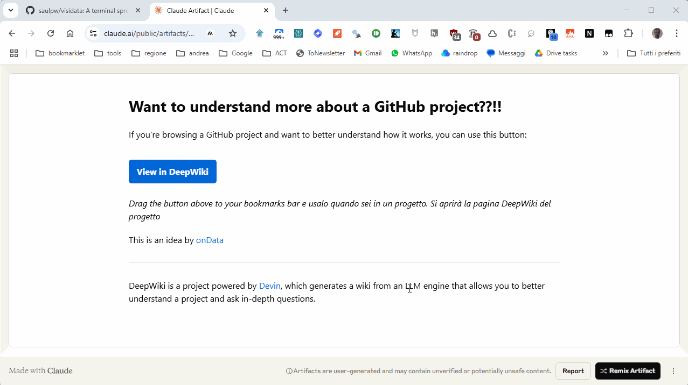

Want to understand more about a GitHub project??!!
If you're browsing a GitHub project and want to better understand how it works, you can use this button:
View in DeepWikiDrag the button above to your bookmarks bar and use it when you're on a project page. The DeepWiki page for that project will open.
This short GIF shows how DeepWiki works
This is an idea by onData
DeepWiki is a project powered by Devin, which generates a wiki from an LLM engine that allows you to better understand a project and ask in-depth questions.
Bookmarklet Code
javascript:(function(){
const match = window.location.href.match(/^https:\/\/github\.com\/([^\/]+\/[^\/]+)/);
if (match) {
const newUrl = 'https://deepwiki.com/' + match[1];
window.open(newUrl, '_blank');
} else {
alert('You are not on a valid GitHub page.');
}
})();